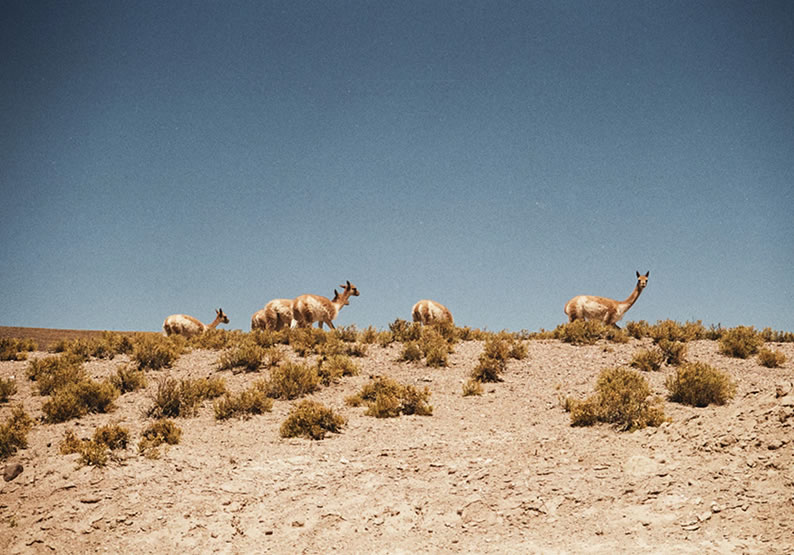
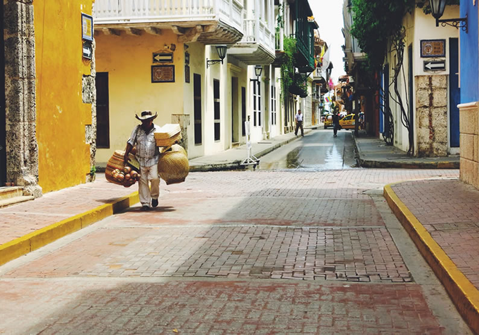
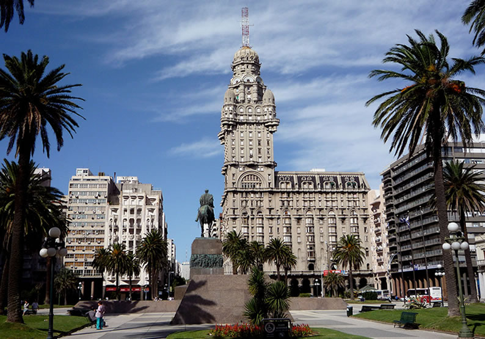
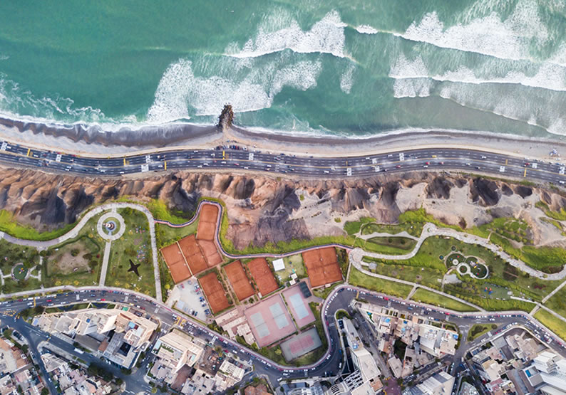
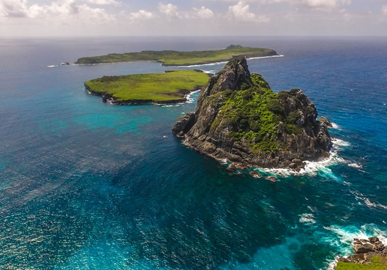

O formato territorial do Chile – fino e extenso – facilita com que os cenários no destino sejam bem variados. Ou seja, em um mesmo país é possível fazer passeios na neve e na praia também. Além disso, também é possível praticar turismo de aventura e contemplar cenários únicos, tanto nas cidades, quanto em meio a natureza. Deserto do Atacama

Um dos melhores destinos da América do Sul está localizado no Chile. Conhecido principalmente mundialmente, o Deserto do Atacama é uma atração famosa no país. O deserto tem cerca de 1.000 km de extensão e ao longo dele você irá se deparar com atrações incríveis, como o Gêiseres del Tatio, o Vale da Lua e Vale da Morte. Quem viaja entre os meses de julho e novembro ainda pode ter a sorte de ver o deserto mais seco do mundo cheio de flores. É um espetáculo a parte que vai te deixar apaixonado por esse lugar.
A Argentina costuma ser o primeiro destino internacional dos brasileiros. Isso porque além da proximidade e da economia, nossa vizinha conta com destinos encantadores e muitas opções de lazer para divertir o viajante. Existem muitos destinos interessantes e um deles com certeza vai agradar você. Tem destino para curtir a noite, para contemplar a natureza, para ter experiências gastronômicas e muitas outras coisas.
Buenos Aires é um dos melhores lugares para viajar na América do Sul. A capital argentina é o destino sul americano com maior influência europeia. Conhecida como a Terra do Tango, a capital oferece diversas opções interessantes de entretenimento como museus, teatros, apresentações culturais e uma gastronomia super aclamada pelos viajantes. Entre as principais atrações da cidade estão o bairro de Puerto Madero, os bosques do Palermo, Caminito, a Casa Rosada, a Plaza del Mayo e o Obelisco.
A Colômbia têm conquistado seu espaço entre os melhores destinos para viajar na América do Sul com destinos paradisíacos que tem se destacado nos últimos anos. O país pode ser uma aposta barata para quem não quer gastar muito com passagens aéreas, e ao mesmo tempo, conhecer lugares surpreendentes. Confira algumas dicas de lugares para conhecer na Colômbia.

Uma das cidades mais visitadas da Colômbia, Cartagena é super fotogênica e colorida. Foi considerada um dos portos comerciais mais importantes durante o período colonial espanhol e, por isso, tem muita história para contar. A parte antiga da cidade é cercada por uma muralha, também conhecida como Ciudad Amurallada e é ali que você encontra as principais atrações turísticas de Cartagena, como o Palácio da Inquisição e a Torre do Relógio. Outra atração na cidade é pôr-do-sol. O lugar preferido pelos viajantes para assistir esse espetáculo da natureza é o Café Del Mar, de onde você terá uma vista apaixonante.
O Uruguai tem ganhado cada vez mais fama entre os brasileiros. Seja pelos preços mais baixos ou pela proximidade com o nosso país – faz fronteira com o Rio Grande do Sul. O país é uma boa pedida para quem quer conhecer um destino internacional sem gastar muito. Como é um país pequeno, é possível conhecer diversas atrações em uma viagem só. Confira quais são os maiores pontos de interesse uruguaios:

A capital do Uruguai é um ótimo lugar para explorar a pé. Na região antiga de Montevideo estão concentradas as principais atrações da cidade, como o Edifício Salvo, o Teatro Sólis, e a antiga sede do governo, o Palácio Estévez. Durante a noite, esta também é a área mais animada da cidade. A capital uruguaia também conta com dois cassinos para quem curte apostas e jogos de azar. Entre os parques mais conhecidos da cidade estão o Parque del Prado, o Parque Rodó e o Battle.
O Peru é um país conhecido pela maioria das pessoas por causa de Machu Picchu. Também conhecida como Cidade Perdida dos Incas, ela é provavelmente a atração turística mais famosa da América Latina. Mas o Peru não se resume apenas às belezas dessa cidade. O país também tem muito apelo cultural, uma diversidade geográfica incrível e paisagens de tirar o fôlego.

A capital do Peru é vista muitas vezes como porta de entrada para Machu Picchu ou apenas como uma escala para um outro destino final. Mas a verdade é que a cidade tem muito mais a oferecer aos viajantes. O Centro Histórico de Lima pode ser o ponto de partida da viagem. O lugar que já sofreu com diversos desastres naturais e com o descaso do governo, atualmente está sendo revitalizado aos poucos e ficando mais seguro. E se você curte turismo gastronômico, Lima vai ser um dos melhores destinos na América do Sul. Afinal, na cidade estão concentrados 3 dos 50 melhores restaurantes do mundo. Não é para qualquer um, né?
E por último mas não menos importante, não poderíamos deixar o Brasil de fora da nossa lista de melhores destinos América do Sul, não é verdade? Afinal, nosso país está repleto de belezas naturais, cultura, história e muita simpatia por parte dos brasileiros. Pensando nisso, separamos alguns destinos do Brasil que são apaixonantes tanto para o brasileiros, quanto para quem vem de fora. Confira:

Fernando de Noronha é um dos destinos mais paradisíacos do nordeste brasileiro. Um dos lugares preferidos de quem gosta de praticar mergulho, já que a visibilidade da água é incrível e que a biodiversidade na ilha é enorme. No arquipélago você poderá ver de pertinho golfinhos, tubarões, peixes de diversas espécies e tartarugas. Mas é importante frisar que existem regras para o “contato” com esses animais, é proibido por exemplo, nadar com os golfinhos na ilha. Para os mais aventureiros e que curtem paisagens paradisíacas, fazer trilha é uma ótima opção. Muitas das atrações da ilha são protegidas pelo IBAMA. Isso significa que nesses lugares, será necessário agendar com antecedência, pois o número de visitante pode ser limitado.
{kind=link}
{kind=link}
{kind=link}
{kind=link}
{kind=link}
{kind=link}